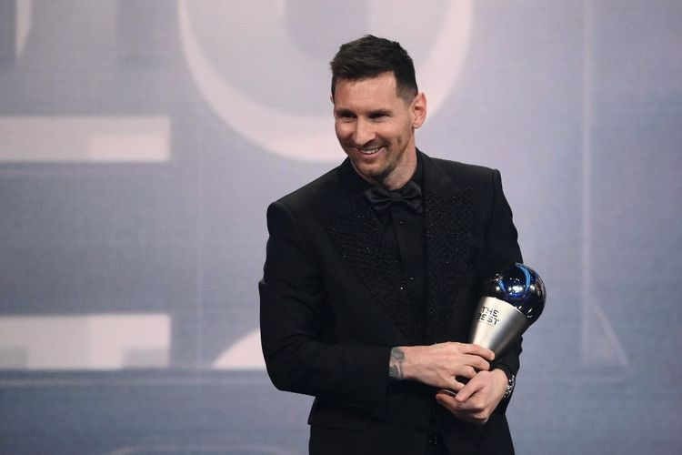
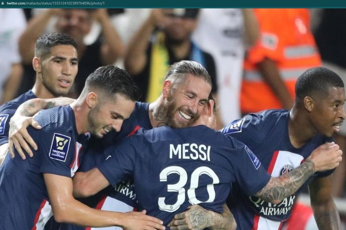
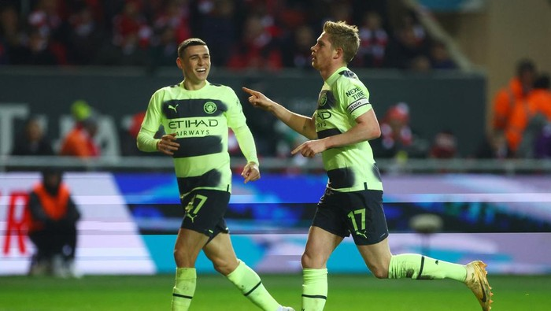

Manchester United vs West Ham, 3 Penggawa Setan Merah Bakal Absen
Manajer Manchester United, Erik Ten Hag memberikan update seputar timnya jelang menghadapi West Ham.
Ia mengonfirmasi ada tiga pemainnya yang kemungkinan besar akan absen di laga tersebut.

Lionel Messi Pemain Terbaik FIFA 2022, Ungguli Mbappe dan Benzema
Kapten timnas Argentina Lionel Messi terpilih sebagai pemain pria terbaik dalam acara The Best FIFA Football Awards 2202.
Seremoni The Best FIFA Footbal Awards 2022 telah dilakukan di Paris, Perancis, Senin (27/2/2023) malam waktu setempat atau Selasa (28/2/2023) dini hari WIB.

PSG Bersih-bersih Pemain, Arsenal Bisa Tampung 3 Nama Mentereng Les Parisiens
Arsenal tampaknya harus mulai memikirkan pemain yang bakal direkrutnya saat bursa transfer musim panas 2023 nanti.
Konsistensi yang ditunjukkan pada musim 2022-2023 dengan menjadi penantang juara Liga Inggris menjadi bukti nyata.

Hasil Piala FA: Man City Gebuk Bristol 3-0, Lolos ke Perempatfinal
Arsenal tampaknya harus mulai memikirkan pemain yang bakal direkrutnya saat bursa transfer musim panas 2023 nanti.
Konsistensi yang ditunjukkan pada musim 2022-2023 dengan menjadi penantang juara Liga Inggris menjadi bukti nyata.